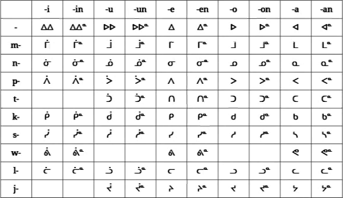
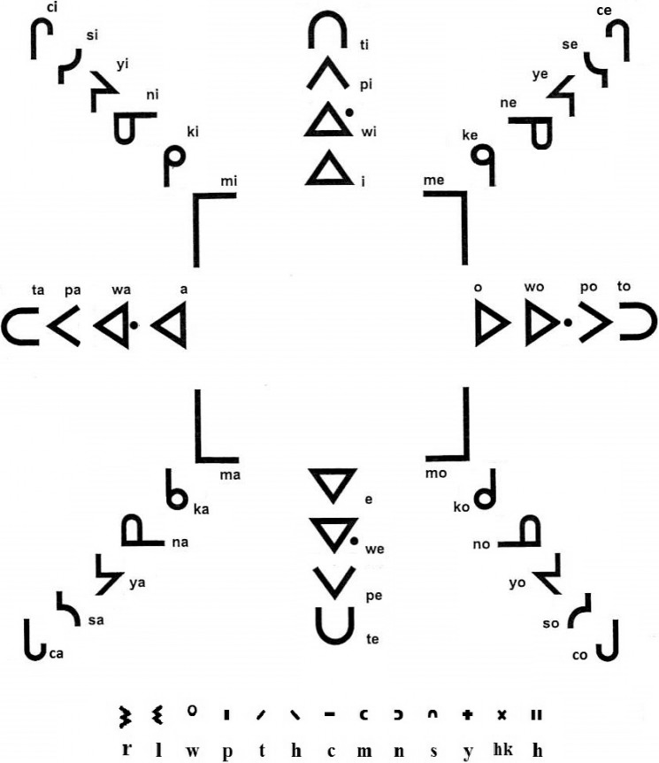

◌ᓐ means n at end of syllable
(e.g. ᑐᓐᓯ tonsi) [5]
An overdot (◌̇) is used to indicate that a syllable is pronounced
with u instead
of o.[6]
The shaded syllables above (ᕗ wo, ᕘ wu, ᑎ ti, and
ᔨ ji) are not allowed in Toki Pona.
Punctuation
Use either Latin punctuation or small a cross (᙮) after each
sentence.
Hyphen is a double line (᐀).
Put naming mark (ᕐ◌) before names (unofficial words).
Many texts use only space between words and a small cross (᙮) at the end
of sentences as punctuation—other texts instead use a full set of Latin
punctuation marks (including the Latin period). Syllabics uses a double
horizontal line (᐀) as a hyphen, this is to avoid confusion with the
syllable final c (◌ᐨ) used in Western Cree.
Syllabics does not have upper and lower case, and so names
(that is, unofficial words) can’t be marked with capitalization. Instead,
to mark these words, put a naming mark ᕐ in front of it: ᑐᑭ
ᕐᓯᓇᓐ toki Sinan (the Klingon language), ᔭᓐ ᕐᓱᓐᔭ jan Sonja,
and ᒪ ᕐᑲᓇᑕ ma Kanata
(Canada).[7]
Syllabics can be written either pointed, or unpointed,
referring to the dots (or points) above the characters. Text written
in syllabics is very often unpointed (fluent speakers have no problem
recognizing the words, even without vowel length markings). In the few
cases where ambiguity may rear its ugly head, one may either rely on
context to clear it up, or add dots to clarify only as needed (this is
known as strategic pointing).[8]
Unpointed syllabics are very common, even on road signs, inscriptions,
and other quite formal contexts.
Toki Pona Unpointed!
You can write official Toki Pona words unpointed.
With names and non-pu words, use strategic pointing.
The word ᑰᓘᐴ kulupu, if written unpointed becomes
ᑯᓗᐳ kolopo. Since the word ᑯᓗᐳ kolopo does not exist in the
Toki Pona lexicon, any reader fluent enough in the language would thus
quickly realise that ᑯᓗᐳ kolopo could not be the intended word and
that ᑰᓘᐴ kulupu is the only possible substitute!
A closer look at pu[9] reveals
that there is no overlap between words containing o
and u in the official dictionary. Which means that not only is the
unpointed ᑯᓗᐳ kolopo not ambiguous, but no unpointed words
are![10]
The exceptions to this are names, and the post-pu word
ᑐ to.[11]
Whether or not a name can be unpointed, depends on the reader. Is it a
name they are likely to know? If so, unpointed will probably work, but if
I’m talking talking to you about my friend ᔭᓐ ᑕᑐ (that you’ve never heard
of before) how could you possibly know whether I’m talking about a jan
Tato or a jan Tatu?—Well, I’ll refer to them as ᔭᓐ ᑕᑑ jan
Tatu the first time I mention them, but after that I might drop the
dot.
To not confuse ᑐ to with ᑑ tu, you’ll either have to
hope that context is enough for your readers, or make sure you always
strategically point ᑑ tu.
Compared to Other Toki Pona Syllabics
As I started to researching how to write Toki Pona with Canadian
Aboriginal syllabics, I figured I couldn’t be the first person to try this,
so I did some googles. I did a lot of googles, actually, but all my efforts
came up empty. Naturally enough, after having written this article,
I stumbled across some earlier Toki Pona syllabics (one hidden in a video,
the others inside walled gardens). So I thought I’d take a moment to talk
about them here.
By jan Misali (2017)
The first version I stumbled upon was the following table of all
possible Toki Pona syllables, written in Canadian Aboriginal syllabics,
and displayed for a few seconds in one of jan Misali’s videos on YouTube:

Screenshot of table from
video Conlang Critic
Episode Twelve: Toki Pona (03:49) by jan Misali
(23 February 2017).
The video is a review of Toki Pona and the above table is shown for
only a few seconds, in the midst of a stream of similar tables, each
showing the syllables of Toki Pona written with different writing
systems.—Looking at the table more carefully, it seems as if it was quite
quickly thrown together (to be expected, given the amount of screen time
it gets) but most of it makes perfect sense. The first row contains a
couple accidentally doubled characters, but since the columns below are
consistent in their use of the overdot (◌̇) the intent is easy enough to
see. (Also, a long vowel is written with an overdot when using syllabics,
but in Latin transcriptions it is written by doubling the vowel.) Below I
will simply assume ᐃᐃ was intended as ᐄ, and ᐅᐅ as ᐆ.
e: The writing of e is just odd!—I figure jan
Misali can only ever have been looking at the Inuktitut vowels
(ᐃ i, ᐁ ai, ᐊ a, ᐅ u, but lacking e)
and worked his way from there without ever seeing (the, to Toki Pona,
much better fitting) the Cree vowels (ᐃ i, ᐁ e, ᐊ a,
ᐅ o). This lead to the counter-intuitive use of ᐃ for e (it
means i in all other languages) while not making use of the
rotation ᐁ (e in Cree). Not using all the possible rotation also
means that, in any given text, there are more characters with overdots,
possibly impacting legibility.
w: I fell in love with how jan Misali write w!—In the
Canadian syllabics languages that use w, the sound is added to the
beginning of a syllable by putting a dot, either before (ᐧ◌), or after
(◌ᐧ), the syllabic character (the dot position depends on the language).
However, rather than using a dot for w, jan Misali opted to spell
‘w’ as ‘v’ using the v-series of characters (ᕕ wi, ᕓ we,
ᕙ wa, ᕗ wo). While this is not technically correct
it leads to no conflict since Toki Pona does not have a v
sound. Also the v-series shapes are much prettier than adding dots!
(Though, here, too, I suspect that jan Misali only ever looked at
Inuktitut, since that is one of the few languages which use Canadian
Aboriginal syllabics, but which do not have a w sound.)
Conclusion: It is quite clear that this is just a throwaway
suggestion, created, not to be the final word in Toki Pona syllabics, but
as window-dressing for a couple of frames in a video. It is also quite
obvious that jan Misali’s syllabics only draw from the Inuktitut usage of
the script, ignoring Cree (which is a shame, since Cree’s vowel mapping
is a much better fit for Toki Pona). Despite this is jan Misali’s
syllabics pretty good (the only major mistake being the vowels). The
(however accidental) idea to use the v-series for Toki Pona w
(ᕕ wi, ᕓ we, ᕙ wa, ᕗ wo) is a good one, as it
cuts down on dot clutter, and increases cuteness. (I just love those
loopy ᕕᕓᕙᕗ characters!)
Update, 13 March 2021: I originally wrote w in the
Eastern Cree style (ᐎ wi, ᐌ we, ᐗ wa, ᐒ wo),
but I have since changed my mind, and now use the Inuktitut v-series
(ᕕ wi, ᕓ we, ᕙ wa, ᕗ wo) instead. This is
partly on jan Misali’s (and jan Katelin’s)
suggestions, and partly because I, in practice, have found it easier to
read.[2]
By David King (2018)
I found King’s take on syllabics for Toki Pona in a posting to
the toki pona Facebook group. It is based on a single Canadian
Aboriginal syllabics star chart, which, at the time, had been doing the
twitter rounds for a while.
I have not been able to determine with absolute certainty which
language this set of characters is used for, but the r-series (ri, re,
ra, ro in the image above) are unique the
Western Oblate
missionary style,[12] which I
presume is used for Western Cree. (This r-series is not even included
in Unicode!)
w: King writes w as a dot after the syllabic
character (ᐏ wi, ᐍ we, ᐘ wa, ᐓ wo) using the
Western Cree style.
l: Curiously, the l-series of characters found in King’s chart
differs from the Western Oblate style. Between the two styles, all
characters, except ᕊ lo, are mirrored along center line of the
U-shape (so that little serif-like line, that juts out from one of the
tines in the U-shape, sticks out in the opposite direction). Compare:
ᕄᕆ li, ᕂᕃ le, ᕋᕍ la, and ᕊᕊ lo (in each pair,
the first character is in King’s style, and the second is in the Western
Oblate style).[13]
j: The “j-series” of characters chosen by King (which are more
commonly written with c in the Latin script; ᒋ ci,
ᒉ ce, ᒐ ca, ᒍ co) are, in Western Cree, pronounced
with [t͡s] or [t͡ʃ].—The Toki Pona j is softer, and its
pronunciation is much closer to the Cree y sound, so a better fit
would have been the y-series of characters (ᔨ yi, ᔦ ye,
ᔭ ya, ᔪ yo) which are also present in the star chart.
n: King uses a Western Cree form of the
syllable-final n: ◌ᐣ.
u: King suggests adding an umlaut or double overdot (◌̈) to the
o-series of characters in order to write a syllable with u
(ᐇ u, ᕗ̈ wu, ᐵ pu, ᑒ tu, ᑱ ku,
ᒩ mu, ᓆ nu, ᓳ su, ᔬ ju, ᓙ lu).—I
(having independently come up with the same idea) can do nothing but
approve of the fact that he writes syllables with u by modifying
the o-series. Though I personally think a single overdot (◌̇) is a better
fit, since the single overdot is used (to mark that a vowel is long) in
all styles of syllabics, while the doubled overdot is only rarely used.
(Presumably King did not know of the prevalence of the single overdot in
Canadian Aboriginal syllabics, since this information is not included in
the star chart he used.)
Conclusion: It is clear that King based his Toki Pona
syllabics off of that single star chart of Western Oblate syllabics,
meaning that his style also inadvertently inherited all the
idiosyncrasies of that particular chart (like the odd j/c mix-up,
and the mirrored characters of the l-series). With that in mind, I like
his take on it, and the fact that both King and I independently decided
to write u in a similar way strengthens my belief in that idea.
Epilogue: As it turns out, King’s star chart did not
originate with Matt Baker (who never claimed to have created it
himself—he only tweeted about it, but neglected to give a source). A
reverse image search instead revealed the source to be the web page of
University Blue Quills, of Blue Quills First Nation in Alberta, Canada.
(Unfortunately I could find no information about what language the chart
is intended for.) In addition to the chart used by King, their web page also feature a different star
chart, with more common characters (with characters that are all
to be found in Unicode). For completeness, I’ll include it here.
A different Canadian
Aboriginal syllabics star chart published by University Blue Quills
(13 July 2015).
By jan Katelin (2021)
I found jan Katelin’s syllabics when searching the Toki Pona Discord
server for all things related to Canadian Aboriginal syllabics. She
describes her syllabics style in the following messages to
the #toki-pona channel.
ᔭᓐ ᕐᑲᑏᓕᓐ (jan Katelin)
09/01/2021
a
i
u
e
o
p
ᐸ
ᐱ
ᐳ
ᐲ
ᐴ
t
ᑕ
-
ᑐ
ᑏ
ᑑ
k
ᑲ
ᑭ
ᑯ
ᑮ
ᑰ
l
ᓚ
ᓕ
ᓗ
ᓖ
ᓘ
w
ᕙ
ᕕ
-
ᕖ
-
j
ᔭ
-
ᔪ
ᔩ
ᔫ
s
ᓴ
ᓯ
ᓱ
ᓰ
ᓲ
m
ᒪ
ᒥ
ᒧ
ᒦ
ᒨ
n
ᓇ
ᓂ
ᓄ
ᓃ
ᓅ
(edited)
the biggest change is that I made overdot mean a more open vowel
(ie i -> e,u -> o) instead of a
long vowel
oh and no consonant is just ᐊ ᐃ ᐅ ᐄ ᐆ
trailing ᓐ is “n”, leading ᕐ serves the same purpose as capitals in
latinized tp
In contrast to the others, jan Katelin seemed to have spent quite some
time with her syllabics. She mentioned in #toki-pona that she’d
learned the use of it while she was learning the Toki Pona language.—She
later verified this in private conversation, also mentioning that her
starting point had been the table of syllabics is jan Misali’s video
(see above) but that she’d regularized, and
expanded upon it when she’d found a need for it.
Front
Back
Close
ᐃi
ᐅu
Mid
ᐄe
ᐆo
Open
ᐊa
Vowels: This syllabics style pays homage to
its Inuktitut roots by keeping the vowels that are used in the Inuktitut
language (a, i, and u) unpointed, while marking the vowels
that do not occur in Inuktitut (e and o) with an overdot.
This also means that the overdot can be thought of as a diacritic to
indicate a “more open” vowel (turning ᐃ i into ᐄ e, and
ᐅ u into ᐆ o).
Names: Where the Latin orthography of Toki Pona uses
capitalization to indicate names/unofficial words, jan Katelin
instead marks names by putting the Inuktitut uvularization
character (ᕐ◌)[14] in front of
the word.—This is neat! Originally my own syllabics did not
include a naming marker like this, but in part inspired by jan Katelin, I
later added one.
Conclusion: The syllabics style of jan Katelin is an
improvement on jan Misali’s, and both her additions are good ones. Her
addition of a naming mark (ᕐ◌) is an especially good idea and is
original to her system.
Update, 21 March 2021: I originally used the Western Cree final
ᑊ p as a naming mark, but, after seeing the symbol that jan
Katelin chose, and thinking about it for a bit, I adopted jan Katelin’s
symbol.[15]
[2] Here the Inuktitut v-series (which used for both f
and v in Cree and Ojibwe) is used to write the w of Toki Pona
(ᕕ wi, ᕓ we, ᕙ wa, ᕗ wo).—One could argue that
it is inaccurate to write Toki Pona’s w sound with a syllabics
character representing v (or f ) when several of the
syllabics’ languages actually do have a w sound, and a way of
writing it. In practice however, I’ve found that it is easier to read a
text which is less cluttered by dots. (In Ojibwe and Eastern Cree w
is written by adding a dot in front of the syllabic character: ᐎ wi,
ᐌ we, ᐗ wa, ᐒ wo. Western Cree instead write w
as a dot after the syllabic character: ᐏ wi, ᐍ we,
ᐘ wa, ᐓ wo.)
This article originally advocated writing w in the Eastern Cree
way, with a leading dot (ᐧ◌). This was mostly to be consistent with the
fact that this style happened to use mostly Eastern Cree conventions for
other things (like the l-series, ᓕ li, ᓓ le, ᓚ la,
ᓗ lo, and a raised ᓇ na as syllable-final ◌ᓐ n).
However, experience has since taught me that readability is a more
important aspect than a hundred percent faithfulness to any one source.
[3] Since the letter j in Toki Pona is
pronounced like y in English, I have chosen to use the Canadian
syllabics y-series of characters (ᔨ yi, ᔦ ye, ᔭ ya,
ᔪ yo) for j. (But in keeping with Toki Pona spelling I refer to
them as ji, je, ja and jo elsewhere in this text.)
[4] I opted to use the l-series from Eastern Cree (also used by
Inuktitut), simply because that set of glyphs respects the symmetry of the
syllabics, while glyphs of the l-series in Western Cree syllabics do not
follow the expected pattern of rotations. The table below show a comparison
between Eastern and Western l-series. (Yes! The Western l-series below is
pointing in all the wrong directions, but I assure you: That is not a mistake
on my part!)
Eastern Cree
li
ᓕ
ᓓ
le
la
ᓚ
ᓗ
lo
Western Cree
li
ᕆ
ᕃ
le
la
ᕍ
ᕊ
lo
[5] The languages written in Canadian syllabics use various
different glyphs for non-syllabic n. For simplicity’s sake I’m here
using the character ◌ᓐ (raised ᓇ na, used by Inuktitut, Eastern Cree,
most of Ojibwe). Other possible choices include: ◌ᐣ (final n in
Western Cree) or ◌ᣙ (raised ᓂ ni, a less common variant used in
Ojibwe).
[6] In Canadian syllabics an overdot (◌̇) is used to mark long
vowels, but Toki Pona does not make a distinction between long and short
vowels. However, Canadian syllabics only have four possible rotations with
which to indicate vowel, and Toki Pona has five vowels, so in this
system the overdot is used to convert an o into an u, instead
of its traditional vowel-lengthening role.
The o-series of characters—which is used here for both o (without
overdot) and u (with overdot)—is used for o in most of the
Canadian syllabics languages, but is used for u in Inuktitut. I’ve
chosen to mark u with an overdot (rather than o)
since u is the least common vowel in Toki Pona, and I want to
minimize the amount of diacritics occurring in text.
[7] The idea of a naming mark does not
come from Canadian Aboriginal syllabics, but is borrowed from
the Shavian
alphabet (which, just like syllabics, does not distinguish between
upper and lower case). In Shavian this symbol is called a naming dot
and is written as a raised dot (ᐧ◌) in front of a name. (The same raised
dot is used in syllabics to indicate that a w should be added to a
syllable.)
[8] For the curious, the blog post “Abecedaria: To Point or Not to Point” by Suzanne McCarthy goes into
the subject of pointing in greater detail.
[9] The word “pu” is defined by the “Official Toki Pona
Dictionary” (found in the book Toki Pona: The Language of Good,
2014, Sonja Lang, pages 125–134). It means
“ADJECTIVE interacting with the official Toki Pona book”.
[10] There are 23 words containing u in the official
dictionary, namely: ᐊᓅ anu, ᐁᓲᓐ esun, ᑰᓓ kule,
ᑰᓘᐴ kulupu, ᑰᑌ kute, ᓕᐴ lipu, ᓘᑲ luka,
ᓘᑭᓐ lukin, ᓘᐸ lupa, ᒧᑰ moku, ᒨ mu,
ᒨᓐ mun, ᒨᓯ musi, ᒨᑌ mute, ᐴ pu, ᓲᓕ suli,
ᓲᓄ suno, ᓲᐸ supa, ᓲᕕ suwi, ᑑ tu,
ᐆᓐᐸ unpa, ᐆᑕ uta, and ᐆᑕᓚ utala.
[11] The post-pu words ᑌ … ᑐ (te … to) are used to delimit
quotes, according to jan Inwin’s Toki pona dictionary (Nimi Ale Pona 2nd ed).
[12] The “Western Oblate style” of syllabics is described in
John Stewart Murdoch’s thesis from 1981, Syllabics:
A Successful Educational Innovation. (See pages 308, 311, and table 7
on page 391.)
[13] The difference between King’s style and the Western Oblate
style might be easier to see using tables.
King’s style
li
ᕄ
ᕂ
le
la
ᕋ
ᕊ
lo
Western Oblate
li
ᕆ
ᕃ
le
la
ᕍ
ᕊ
lo
[14] In Inuktitut, ᕐ◌ uvularization can be put in front
of a k-series character (ᑭ ki, ᑫ kai, ᑲ ka,
ᑯ ku) to indicate that the k sound is pronounced a further
back than usual (with an uvular q, rather than the usual
velar k): ᕿ qi, ᙯ qai, ᖃ qa, ᖁ qu.—The
same character can also be written after a syllabic character (◌ᕐ)
but then it indicates an r sound (◌ᕐ is a raised Inuktitut
ᕋ ra).
[15] This article originally used the Western Cree final ᑊ p as a
naming mark, but after seeing jan Katelin’s use of
the Inuktitut symbol ᕐ◌ uvularization[14] (and letting the thought sink in) this was changed.
Reasons include:
The Inuktitut ᕐ◌ uvularization character is used at the
beginning of words, but I have not been able to confirm whether or not
ᑊ p can do that in Western Cree. (Finding information about Cree
syllable structure is surprisingly hard!)
The Toki Pona syllabics described in this article mostly borrows the
conventions of Eastern Cree and later styles of syllabics. The
character ᑊ p (not being a raised syllabic symbol) is in an
earlier, Western Cree, style, while ᕐ◌ uvularization (being the
raised Inuktitut syllabic ᕋ ra) is in a more Eastern tradition.
The fact that jan Katelin’s syllabics already use this symbol makes
it easier for syllabics aficionados to switch between this style and
jan Katelin’s.
 David King
David King
{kind=link}
{kind=link}
{kind=link}